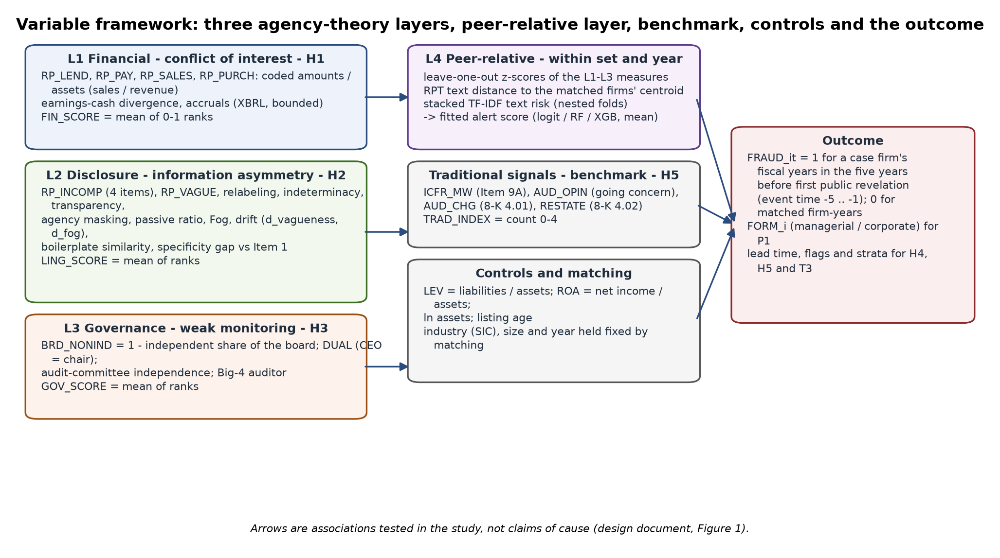

Methodology
From public filings to tested hypotheses
The analysis is one pipeline. Select a step for its explanation.
1 · Public SEC filings
Filing lists from the EDGAR submissions API; the primary annual report of every fiscal year FY2004–2024; the proxy statement of every filing year; XBRL company facts; 8-K Items 4.01 and 4.02; every amended annual report.
2 · Filing and evidence extraction
Item 1, Item 9A, Item 13, the related-party note and the audit report are located by heading; the proxy's related-party section replaces Item 13 when it is incorporated by reference. Every coded value keeps the sentence it came from. Texts under 40 words are treated as missing.
3 · Eight related-party characteristics
Financial: lending to, payables to, sales to and purchases from related parties, scaled by assets or revenue. Disclosure: incompleteness (counterparty, amount, terms, purpose) and vagueness (Loughran–McDonald uncertainty and weak-modal words). Governance: board non-independence and CEO duality from the proxy statement.
4 · Rank-based score construction
Each characteristic is ranked 0–1 against the 862 analysed firm-years (average ranks for ties); a layer score is the mean rank of the characteristics observed; the risk score is ten times the mean of the layer scores that exist. Nothing is imputed.
5 · Matched case/control comparison
Pr(case firm-year) = Λ(αset + β·layer + γ·leverage + δ·ROA), conditional on the matched set, so each case is compared only with its own matched firms. β is per standard deviation; standard errors are clustered by firm because a firm's five years are not independent.
6 · Five hypothesis tests
H1–H3: one layer each. H4: the same tests in each event year. H5: Model A (traditional index + controls) against Model B (plus the risk score), each matched set scored by a model fitted without it, and the first year each rule flags a case at an equal false-alarm rate.
7 · Multiple-testing correction
H1–H3 are three tests of one idea, so Holm's step-down adjustment is applied and reported beside the unadjusted p-values. H4 runs fifteen year-by-layer tests and is read as limited evidence either way.
8 · Interpretation
Results are associations within matched sets, observed before public disclosure. Matched firms are firms without enforcement, not firms known to be clean.
The eight characteristics and where each comes from
| Layer | Code | Measured as | Source in the filings |
|---|---|---|---|
| L1 financial | RP_LEND | largest lending amount in the related-party text ÷ XBRL total assets (clipped at 1) | related-party text amount ÷ XBRL total |
| L1 financial | RP_PAY | largest payable amount ÷ XBRL total assets (clipped at 1) | related-party text amount ÷ XBRL total |
| L1 financial | RP_SALES | largest sales amount ÷ XBRL revenue (clipped at 1) | related-party text amount ÷ XBRL total |
| L1 financial | RP_PURCH | largest purchase amount ÷ XBRL total assets (clipped at 1) | related-party text amount ÷ XBRL total |
| L2 disclosure | RP_INCOMP | (4 − items stated) ÷ 4; items: counterparty named, amount stated, terms stated, purpose stated | related-party text (Item 13, DEF 14A section, note) |
| L2 disclosure | RP_VAGUE | (uncertainty + weak-modal words) ÷ total words | related-party text (Item 13, DEF 14A section, note) |
| L3 governance | BRD_NONIND | 1 − (independent directors ÷ board size), from the proxy statement | proxy statement (DEF 14A) |
| L3 governance | DUAL | 1 if the chief executive also chairs the board | proxy statement (DEF 14A) |
Measured filing characteristics (these eight, the traditional signals and the controls) are distinct from the derived risk score.
The full design in one figure

